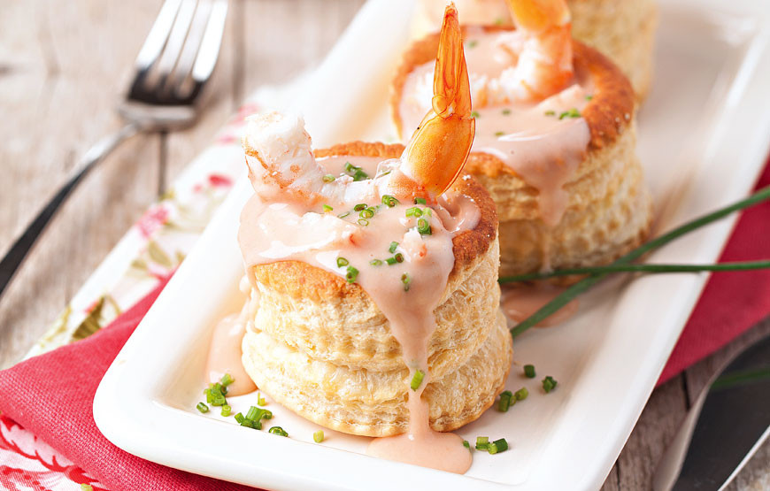

Vol-au-vent de camarão

Ingredientes
- 2 placas de massa folhada
- 1 gema de ovo
- 1 colher (sopa) de água
- 180g de camarões descascados
- 1 xícara de leite
- 2/3 de xícara de cogumelo frescos cortados em pedacinhos
- 1 colher (sopa) de farinha de trigo
- 1 colher (sopa) de manteiga
- 1/3 de alho-francês
- 1 colher (sopa) de salsa picada
- Sal e pimenta a gosto
Modo de preparo
- Coloque a massa folhada sobre uma superfície enfarinhada e passe o rolo de massa sobre ela.
- Bata a gema com a água e pincele.
- Com um cortador, faça círculos na massa (não muito grande, pois a massa cresce ao ir ao forno), retire o círculo com cuidado e coloque-o sobre uma superfície enfarinhada.
- No centro desse círculo de massa, faça um círculo menor, não pressione muito para não cortar, faça apenas meio corte. Com o meio-corte virado para dentro, molde a massa para que ela faça uma espécie de "copinho".
- Faça este procedimento por oito vezes ou até acabar a massa folhada.
- Coloque os copinhos em uma forma forrada com papel vegetal e leve-os ao forno preaquecido a 200ºC, de 15 a 20 minutos, ou até a massa dourar. Reserve.
- Numa panela, derreta a manteiga em fogo baixo e junte o alho-francês bem picadinho, refogando-o por cinco minutos. Depois, adicione o trigo e mexa bem.
- Após misturado, retire do fogo e junte o leite, mexendo bem novamente.
- Tempere com sal e pimenta e cozinhe até engrossar, sem parar de mexer.
- Junte os camarões, os cogumelos, a salsa picada e cozinhe por mais 3 minutos.
- Recheie os vol-au-vents com o creme de camarão e decore a gosto.
voltar